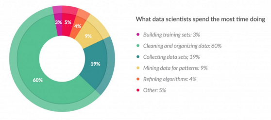

Eksploracja danych
Bartosz Kolasa
05-12-2017
Materiały
Co robi Data Scientist?

Czego nie lubi Data Scientist?

Wielokrotna iteracja

Ekspolaracyjna analiza danych (EDA)
“Procedures for analyzing data, techniques for interpreting the results of such procedures, ways of planning the gathering of data to make its analysis easier, more precise or more accurate, and all the machinery and results of (mathematical) statistics which apply to analyzing data.”
John Tukey
Brudne dane
Dane niepełne
library(titanic)
library(dplyr)
titanic_train %>% filter(is.na(Age)) %>% head## PassengerId Survived Pclass Name Sex Age
## 1 6 0 3 Moran, Mr. James male NA
## 2 18 1 2 Williams, Mr. Charles Eugene male NA
## 3 20 1 3 Masselmani, Mrs. Fatima female NA
## 4 27 0 3 Emir, Mr. Farred Chehab male NA
## 5 29 1 3 O'Dwyer, Miss. Ellen "Nellie" female NA
## 6 30 0 3 Todoroff, Mr. Lalio male NA
## SibSp Parch Ticket Fare Cabin Embarked
## 1 0 0 330877 8.4583 Q
## 2 0 0 244373 13.0000 S
## 3 0 0 2649 7.2250 C
## 4 0 0 2631 7.2250 C
## 5 0 0 330959 7.8792 Q
## 6 0 0 349216 7.8958 SDane niepoprawne
- dane spoza oczekiwanego zakresu
- niepoprawne kombinacje danych
Dane niespójne
Dane niezintegrowane
Typy danych
str(titanic_train)## 'data.frame': 891 obs. of 12 variables:
## $ PassengerId: int 1 2 3 4 5 6 7 8 9 10 ...
## $ Survived : int 0 1 1 1 0 0 0 0 1 1 ...
## $ Pclass : int 3 1 3 1 3 3 1 3 3 2 ...
## $ Name : chr "Braund, Mr. Owen Harris" "Cumings, Mrs. John Bradley (Florence Briggs Thayer)" "Heikkinen, Miss. Laina" "Futrelle, Mrs. Jacques Heath (Lily May Peel)" ...
## $ Sex : chr "male" "female" "female" "female" ...
## $ Age : num 22 38 26 35 35 NA 54 2 27 14 ...
## $ SibSp : int 1 1 0 1 0 0 0 3 0 1 ...
## $ Parch : int 0 0 0 0 0 0 0 1 2 0 ...
## $ Ticket : chr "A/5 21171" "PC 17599" "STON/O2. 3101282" "113803" ...
## $ Fare : num 7.25 71.28 7.92 53.1 8.05 ...
## $ Cabin : chr "" "C85" "" "C123" ...
## $ Embarked : chr "S" "C" "S" "S" ...Uwaga na zmienne czynnikowe
read.csv("myfile.csv", stringsAsFactors = FALSE)Macierz odpowiedniości
table(titanic_train$Survived)##
## 0 1
## 549 342Macierz odpowiedności
table(titanic_train$Sex, titanic_train$Survived)##
## 0 1
## female 81 233
## male 468 109Procentowo
prop.table(table(titanic_train$Sex, titanic_train$Survived))##
## 0 1
## female 0.09090909 0.26150393
## male 0.52525253 0.12233446# table(titanic_train$Sex, titanic_train$Survived) %>% prop.table
prop.table(table(titanic_train$Sex, titanic_train$Survived), margin=1)##
## 0 1
## female 0.2579618 0.7420382
## male 0.8110919 0.1889081Czy zmienne są zależne?
chisq.test(titanic_train$Survived, titanic_train$Sex) -> chsq
chsq$observed## titanic_train$Sex
## titanic_train$Survived female male
## 0 81 468
## 1 233 109chsq$expected## titanic_train$Sex
## titanic_train$Survived female male
## 0 193.4747 355.5253
## 1 120.5253 221.4747Która kombinacja zaburza najbardziej?
chsq$residuals## titanic_train$Sex
## titanic_train$Survived female male
## 0 -8.086170 5.965128
## 1 10.245095 -7.557757chsq$p.value## [1] 1.197357e-58Mniej widoczne
titanic_emb <- dplyr::filter(titanic_train, Embarked != "")
chisq.test(titanic_emb$Survived, titanic_emb$Embarked) -> chsq
chsq$observed## titanic_emb$Embarked
## titanic_emb$Survived C Q S
## 0 75 47 427
## 1 93 30 217chsq$residuals## titanic_emb$Embarked
## titanic_emb$Survived C Q S
## 0 -2.82239750 -0.07993071 1.46918919
## 1 3.58645093 0.10156881 -1.86691454chsq$p.value## [1] 1.769922e-06Więcej wymiarów
with(titanic_train, ftable(Survived, Sex, Embarked))## Embarked C Q S
## Survived Sex
## 0 female 0 9 9 63
## male 0 66 38 364
## 1 female 2 64 27 140
## male 0 29 3 77Pakiet DescTools
library(DescTools)
Desc(titanic_train$Survived, plotit=FALSE)## -------------------------------------------------------------------------
## titanic_train$Survived (integer - dichotomous)
##
## length n NAs unique
## 891 891 0 2
## 100.0% 0.0%
##
## freq perc lci.95 uci.95'
## 0 549 61.6% 58.4% 64.8%
## 1 342 38.4% 35.2% 41.6%
##
## ' 95%-CI WilsonWykresy
Desc(titanic_train$Survived, plotit=FALSE) -> d
plot(d)
Więcej kategorii
Desc(titanic_train$Embarked, plotit=FALSE)## -------------------------------------------------------------------------
## titanic_train$Embarked (character)
##
## length n NAs unique levels dupes
## 891 891 0 4 4 y
## 100.0% 0.0%
##
## level freq perc cumfreq cumperc
## 1 S 644 72.3% 644 72.3%
## 2 C 168 18.9% 812 91.1%
## 3 Q 77 8.6% 889 99.8%
## 4 2 0.2% 891 100.0%Wykresy
Desc(titanic_train$Embarked, plotit=FALSE) -> d
plot(d)
Zmienna ciągła
Desc(titanic_train$Age, plotit=FALSE)## -------------------------------------------------------------------------
## titanic_train$Age (numeric)
##
## length n NAs unique 0s mean meanCI
## 891 714 177 88 0 29.699 28.632
## 80.1% 19.9% 0.0% 30.766
##
## .05 .10 .25 median .75 .90 .95
## 4.000 14.000 20.125 28.000 38.000 50.000 56.000
##
## range sd vcoef mad IQR skew kurt
## 79.580 14.526 0.489 13.343 17.875 0.387 0.160
##
## lowest : 0.42, 0.67, 0.75 (2), 0.83 (2), 0.92
## highest: 70.0 (2), 70.5, 71.0 (2), 74.0, 80.0Wykresy
Desc(titanic_train$Age, plotit=FALSE) -> d
plot(d)
Formuły
Desc(titanic_train$Survived ~ titanic_train$Age, plotit=FALSE)## -------------------------------------------------------------------------
## titanic_train$Survived ~ titanic_train$Age
##
## Summary:
## n pairs: 891, valid: 714 (80.1%), missings: 177 (19.9%), groups: 2
##
##
## 0 1
## mean 30.626 28.344
## median 28.000 28.000
## sd 14.172 14.951
## IQR 18.000 17.000
## n 424 290
## np 59.384% 40.616%
## NAs 125 52
## 0s 0 0
##
## Kruskal-Wallis rank sum test:
## Kruskal-Wallis chi-squared = 1.9701, df = 1, p-value = 0.1604
##
##
## Proportions of titanic_train$Survived in the quantiles of titanic_train$Age:
##
## Q1 Q2 Q3 Q4
## 0 54.2% 63.9% 56.6% 62.7%
## 1 45.8% 36.1% 43.4% 37.3%Formuły
Desc(titanic_train$Survived ~ titanic_train$Age, plotit=FALSE) ->d
plot(d)
Formuły
Desc(titanic_train$Age ~ titanic_train$Survived, plotit=FALSE)## -------------------------------------------------------------------------
## titanic_train$Age ~ titanic_train$Survived
##
## Summary:
## n pairs: 891, valid: 714 (80.1%), missings: 177 (19.9%), groups: 2
##
##
## 0 1
## mean 30.626 28.344
## median 28.000 28.000
## sd 14.172 14.951
## IQR 18.000 17.000
## n 424 290
## np 59.384% 40.616%
## NAs 125 52
## 0s 0 0
##
## Kruskal-Wallis rank sum test:
## Kruskal-Wallis chi-squared = 1.9701, df = 1, p-value = 0.1604Formuły
Desc(titanic_train$Age ~ titanic_train$Survived, plotit=FALSE) ->d
plot(d)
Rozkład długoogonowy
Desc(log10(titanic_train$Fare), plotit=FALSE)## -------------------------------------------------------------------------
## log10(titanic_train$Fare) (numeric)
##
## length n NAs unique 0s mean meanCI
## 891 891 0 248 0 -Inf NA
## 100.0% 0.0% 0.0% NA
##
## .05 .10 .25 median .75 .90 .95
## 0.86 0.88 0.90 1.16 1.49 1.89 2.05
##
## range sd vcoef mad IQR skew kurt
## Inf NA NA 0.39 0.59 NA NA
##
## lowest : -Inf (15), 0.6, 0.7, 0.8, 0.81
## highest: 2.36 (4), 2.39 (2), 2.42 (2), 2.42 (4), 2.71 (3)Rozkład długoogonowy
Desc(log10(titanic_train$Fare), plotit=FALSE) ->d
plot(d)## Warning in bplt(at[i], wid = width[i], stats = z$stats[, i], out = z$out[z
## $group == : Outlier (-Inf) in boxplot 1 is not drawn
Rozkład długoogonowy
library(dplyr)
titanic_nozero <- mutate(titanic_train, Fare=na_if(Fare,0))
Desc(log10(titanic_nozero$Fare), plotit=FALSE)## -------------------------------------------------------------------------
## log10(titanic_nozero$Fare) (numeric)
##
## length n NAs unique 0s mean
## 891 876 15 247 0 1.2783017
## 98.3% 1.7% 0.0%
##
## .05 .10 .25 median .75 .90
## 0.8590902 0.8884828 0.8989993 1.1613680 1.4951973 1.8918624
##
## range sd vcoef mad IQR skew
## 2.1061341 0.4067163 0.3181693 0.3923808 0.5961980 0.8981877
##
## meanCI
## 1.2513312
## 1.3052722
##
## .95
## 2.0541341
##
## kurt
## 0.0782366
##
## lowest : 0.603415, 0.69897, 0.7950106, 0.8087172, 0.8095597
## highest: 2.3570291 (4), 2.3936117 (2), 2.4189225 (2), 2.4199557 (4), 2.7095491 (3)Rozkład długoogonowy
Desc(log10(titanic_nozero$Fare), plotit=FALSE) ->d
plot(d)
Podziękowania
Dziękujemy firmie Kruk SA i Wydziałowi Biotechnologii UWr za wspieranie spotkań STWURa.